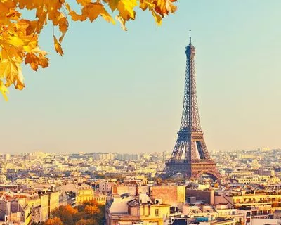
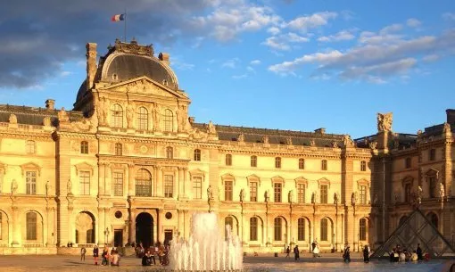
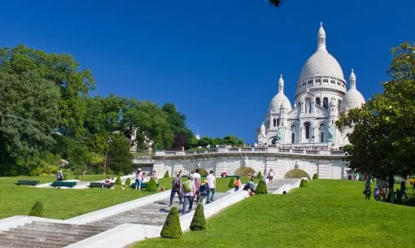
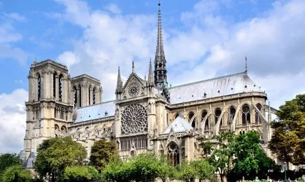
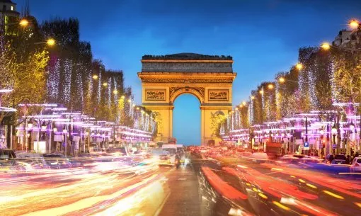
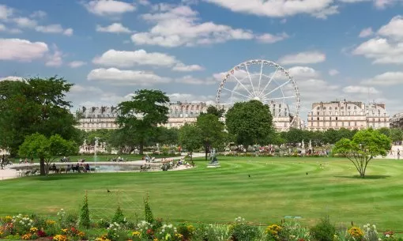
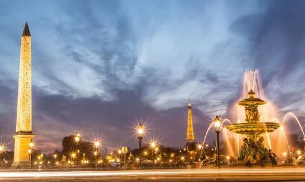

Les Monuments incontournables
La Tour Eiffel

La Tour Eiffel a été innaugurée en 1889 à
l'occasion de l'Exposition Universelle, date marquant le centenaire
de la Révolution Française.
Elle a été conçu par le bureau d'étude de
M.Gustave Eiffel et sa construction a débutée en 1887 pour
une durée de 26 mois.
Sa hauteur initiale était de 300m et actuellement avec les
différentes anteines elle dépasse 330m.
Comment y accéder ?
Située à la Place de la résitance dans le 7ème
Arrondissements de Paris.
En Transport en commun :
- Metro 6 - Arrêt Bir-Hakeim
- Rer C arrêt Champ de Mars Tour eiffel
En voiture :
-
Parking : Pullman - 18 Av. de Suffren, 75015
Paris
-
Parking : Saint-Dominique - 133 Rue
Saint-Dominique, 75007 Paris
Le Musée du Louvre

Le Palais du Louvre a été construit en 1190 et sa
construction a durée plus de 800 ans .
C'est un ancien palas royal situé dans le 1
er Arrondissement de Paris.
Il a été pendant de nombreuses années le grand palais royal conservé
jusqu'au règne de Louis XIV.
Comment y accéder ?
Située dans le 1er Arrondissements de Paris entre le
Jardins de la Tuileries et l'église
Saint-Germian-l'Auxerrois
En Transport en commun :
- Metro 1 - Arrêt Louvre - Rivoli
-
Metro 7 - Arrêt Palais Royal Musée du Louvre
En voiture :
-
Parking : Public Le Louvre - 1 Rue de Marengo,
75001 Paris
-
Parking : Indigo Paris Louvre Samaritaine - 1
Pl. du Louvre, 75001 Paris
Basilique du Sacré-Coeur de Monmartre

La basilique du Sacré-Coeur est une église située
dans le 18eme Arrondissement de Paris.
Monument politique et culturel, sa construction a débutée en
1875 et achevée en 1923.
Elle règle sur l'ensemble de la capitale : elle est au sommet de la
butte Monmartre. On y voit le jeu de lumière de la
Tour Eiffel.
Le quartier qui l'entoure est assez dynamique avec des restaurants
mais aussi de nombreux artistes peintres de rue.
Il est impératif de repartir de cette visite avec votre
auto-portrait déssiné en direct par l'un de ces artistes !
Comment y accéder ?
Située dans les hauteurs du 18eme Arrondissement de
Paris pas très loins de la Cigale.
En Transport en commun :
- Metro 2 - Arrêt Anvers
- Metro 12 - Arrêt Abbesses
En voiture :
-
Parking : Coeur Montmartre Marché Saint-Pierre
- 14 - rue Pierre Picard, 75018 Paris
-
Parking : SAGS Parking Anvers - 41 Blvd
Marguerite de Rochechouart, 75018 Paris
Cathédrale Notre-Dame de Paris

La Cathédrale Notre-Dame de Paris est une église
catholique située dans le 4eme Arrondissement de Paris.
Visible depuis le pont de Saint Michel, elle est le plus
emblématique monument de Paris voir même de la France !
Sa construction a débutée en
1163 et s'est achevée en 1345.
Malheureusement inaccesible actuellement, suite à l'incendie du 15
avril 2019,
sa réouverture est prévue pour le 07 et 08 Décembre 2024.
Comment y accéder ?
Située dans une petite ile entre l'Hotel de ville de
Paris et Saint Michel les hauteurs du 18eme
Arrondissement de Paris pas très loins de la Cigale.
En Transport en commun :
- Metro 4 - Arrêt St-Michel
- Metro 10 - Arrêt Cluny la Sorbonne
- RER B et C - Arrêt St-Michel Notre-Dame
En voiture :
-
Parking : Indigo Paris Lutèce
- Boulevard du Palais, 75004 Paris
-
Parking :
Saemes Parking Lagrange-Maubert Notre-Dame - 19
Rue Lagrange, 75005 Paris
L'Arc de Triomphe de l'Etoile

L'Arc de Triomphe est un monument ayant 4 portes
située à la jonction du 8eme, 16eme et 17eme
Arrondissement de Paris. Il est situé sur un rond point et délimite
avec le Concorde la plus belle avenue de la
capitale : l'avenue des Champs-Elysées. Il faut noter qu'il
est aussi aligné avec l'arche de la Défense.
Sa construction a débutée en
1806 et s'est achevée en 1836 et possède une
hauteur de plus de 49mètres.
Comment y accéder ?
Situé pas deux pas de la porte Maillot sur le rond point
débouchant principalement sur l'avenue de la Grande Armée,
l'avenue Fosh et l'avenue de Wagram.
En Transport en commun :
-
Metro 1, 2 et 6 - Arrêt
Charles de Gaulle Etoile
- RER A - Arrêt Charles de Gaulle Etoile
En voiture :
-
Parking : Indigo Paris George V
- 103 avenue des Champs-Elysées, 75008 Paris
-
Parking :
Indigo Paris Etoile Wagram - 22bis
avenue de Wagram, 75008 Paris
Le Jardin des Tuileries

Le Jardin des Tuileries est un jardin d'une
superficie de 25.5ha. Il est situé entre le palais du
Louvre, la rue de Rivoli et la place de la
Condorde, il est le plus grand et ancien
jardin à Paris et est inscrit et inclus dans la protection du
patrimoine de l'UNESCO
Anciennement un terrain vague, ce jardin a été aménagé sopu l'ancien
Régime (construction du palais des Tuileries à partir de
1564)
Comment y accéder ?
Situé en plein coeur de Paris et sur la rive droite de la seine.
derrière la place de la Condorde.
En Transport en commun :
-
Metro 8 et 12 - Arrêt
Condorde
- Metro 1 - Arrêt Tuileries
En voiture :
-
Parking : Indigo Paris Louvre
- 1 Av. du Général Lemonnier, 75001 Paris
-
Parking :
Saemes Parking Pyramides - 15 Rue des
Pyramides, 75001 Paris
La place de la Concorde

La Place de la Concorde, est située dans le 8ème
Arrondissements. Elle est au dos du
Jardin des Tuileries et délimite
l'avenue des Champs Elysées avec l'Arc de Triomphe. Elle s'étend sur 7.56ha et est la plus grande place de Paris.
Elle fait partie des 5 places royales de la capitale et a connue
plusieurs noms :
- 1763 : Place Louis XV
- 1792 : Place de la Révolution
- 1795 : Place de la Concorde
- 1814 : Place Louis XV
- 1826 : Place Louis XVI
- 1828 : Place Louis XV
- 1830 : Place de la Concorde
Comment y accéder ?
Situé en plein coeur de Paris et sur la rive droite de la seine.
dans le dos du
Jardin des Tuileries.
En Transport en commun :
-
Metro 8 et 12 - Arrêt
Condorde
- Metro 14 - Arrêt Madeleine
En voiture :
-
Parking :
Indigo Paris Place De La Concorde - 3608 Place
de la Concorde, 75008 Paris
-
Parking : Indigo Paris Louvre
- 1 Av. du Général Lemonnier, 75001 Paris